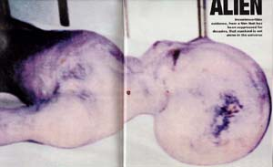

Fin , des photos d'un extraterrestre chinois apparaissent sur le Web. Publiées A l'origine
par un tabloïd hebdomadaire de Hong Kong, elles indiquent que l'extraterrestre aurait été trouvé par un professeur
japonais en .
Takanashi
Le , un n° d'un magazine japonais sur les ovnis publié par Jun-Ichi Takanashi, publie un
article sur les photos en question, expliquant en détails
qu'elles ont certainement été prises par Johsen Takano (38 ans), un ufologue
japonais, lors d'une visite au musée sur les ovnis de Roswell, le .
Cependant, le musée en question n'a pas ouvert avant , et n'a reçu le mannequin que l'année
suivante.
Penthouse

Une des photos du "scoop" de Penthouse
Dans son numéro de , le magazine Penthouse publie 3 photos d'un extraterrestre
supposé, avec le texte suivant :
Bob Guccione ne baisse pas les bras. Et il n'a pas peur. "Les 3 images extraordinaires publiées ici pourraient
bien être les photos les plus importantes de l'histoire de la photographie", dit Guccione, le rédacteur-en-chef et
éditeur de Penthouse.
Jetez un œil aux photos accompagnant cet article et vous aurez un aperçu de ce qu'il veut dire.
Penthouse publie ces photos afin de mettre dans la lumière de la publicité sur la suppression continue du
gouvernement de sa propre recherche de preuves de visiteurs extraterrestres vers notre planète.
'Une photographie de Jésus Christ pourrait être une histoire comparable à la 1ʳᵉ
véritable photo d'un extraterrestre," dit Guccione. "A part ça, il n'y rien de comparable à ça."
L'extraterrestre photographié, au Musée de Roswell
Il est suffisamment extraordinaire que la photo soit publiée tout court. Guccione ne doute pas que si le
gouvernement — et en particulier le renseignement militaire — avait eu connaissance de l'existence de cette photo
avant sa publication elle n'aurait jamais vu l'impression... En fait, il suspecte que si certaines agences avaient
été au courant de ces images, des mesures plus importantes qu'une simple suppression auraient pu être employées.
La photographie est entrée en possession de Bob précisément parce qu'il n'a pas peur, et ne reculera pas lorsque
ses convictions sont titillées. Et parce qu'il sait que notre "meilleur intérêt" dans ce domaine ne peut être
servi que par un dévoilement complet de toute preuve qui puisse exister. Peu importe ce qu'ils disent.
"Qui sont-ils pour nous cacher la preuve incontestable que nous ne sommes pas seuls dans l'univers ?" demande
Guccione. "Les images qui sont ici ont été supprimées pendant des décennies et viennent d'un film pris sous une
sécurité militaire extrêmement serrée. Nous avons de la chance que quelques images aient été sorties sous le
manteau de l'installation où le film a été pris à l'origine. Et nous avons de la chance que sa propriétaire ait
décidé de rendre l'image publique."
Walter G. Haut
evant la reconstitution mettant en scène la créature, au musée de Roswell
L'image appartenait à la fille d'un scientifique allemand qui s'échappa en Amérique au début de la 2nde guerre
mondiale. Dans ce pays le scientifique travailla avec Albert Einstein et Robert Julius Oppenheimer et fut également impliqué dans des entreprises de recherche
gouvernementales top-secrètes, dont l'infâme Expérience de Philadelphie et l'enquête
sur le crash d'un vaisseau spatial mystérieux à Roswell, Nouveau-Mexique, à la fin des
années 1940s.
Des années après le crash de Roswell, dit la femme, son père lui présenta plusieurs
images d'un film, lui ordonnant de les conserver cachées, lui faisant clairement comprendre que le simple fait de
posséder le film pourrait mettre sa vie en danger. Cependant le film, lui assura-t-il, était authentique, et
prouverait au-delà de toute possibilité de dénégation la dissimulation par le gouvernement de visiteurs
extraterrestres sur Terre. Elle devrait savoir quand le moment serait bon pour révéler les images au monde.
Les images restèrent en possession de la femme pendant près d'un demi-siècle. Dévouée à son père — et à la
mémoire de son père — elle obéit à ses souhaits et ne dit rien. Peu à peu, à mesure que l'intérêt du public pour
le phénomène de visites extraterrestres grandit, et que des canulars comme le récent
"film" d'une autopsie d'extraterrestre attirèrent l'attention et la controverse, elle commença à envisager
de rendre public son film secret.
"Le nom de la femme ne sera pas rendu public. Son bien-être est en partie responsable de cette décision. "Comment
nous sommes entrés en contact est notre affaire", dit Guccione. "Je respecte sa vie privée et comprend ses
préoccupations pour sa sûreté et je n'ai absolument aucun doute que ces images soient authentiques." Il a
également peu de doute que, maintenant que les images sont imprimées, le gouvernement insistera sur le fait qu'il
s'agit simplement d'un autre canular.
On indique que Guccione (également éditeur du magazine comme Omni, pourtant de réputation sceptique et ayant publié plusieurs articles démontant l'affaire Roswell) aurait payé entre 50 000 et 200 000 $ [UPI]
pour ces photos, bien que ce dernier nie à la télévision avoir payé quoi que ce soit.
Davids
Paul Davids, qui a joué un officier dans le téléfilm Roswell
Peu après la publication des photos par Penthouse, Paul Davids, producteur exécutif et co-auteur du téléfilm Roswell (1994, adapté du livre de Kevin Douglas Randle et Donald Schmitt avec Kyle MacLachlan dans
le rôle de Jesse A. Marcel et Martin Sheen) déclare sur Internet que l'extraterrestre
montré sur les photos n'est autre qu'un des mannequins réalisés pour son film par Steve Johnson, spécialiste des
effets spéciaux de New York (confirmé par Joe Fordham, bras droit de Johnson). Le mannequin serait maintenant, en
outre, exposé sur un lit d'hôpital au Musée International des Ovnis de Roswell.
Le même mannequin, présenté régulièrement comme la photo d'un authentique extraterrestre, sculpté par
par Norman Cabrera
Joint au téléphone, Davids déclare : Il n'y a même pas 1 chance sur un milliard de trillions que ce soit autre
chose que le mannequin que nous avons prêté au musée de Roswell, qui est aujourd'hui en présentation publique. Il
a la même forme, et chaque détail de chaque blessure, jusqu'à chaque tâche, correspond. Il ajoute être frustré
de devoir démonter ces photos alors qu'il est un fervent partisan de l'authenticité du cas de Roswell.
Deon Crosby, la nouvelle directrice du musée de Roswell, confirme également que Guccione a mis "leur"
extraterrestre dans son magazine, ajoutant que les barrières du lit d'hôpital sont visibles à l'arrière plan des
photos de Penthouse.